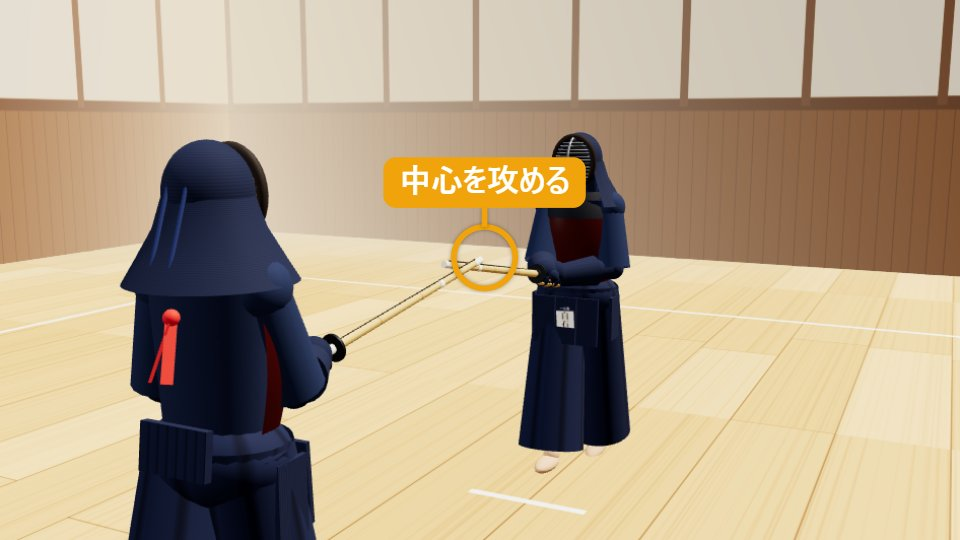
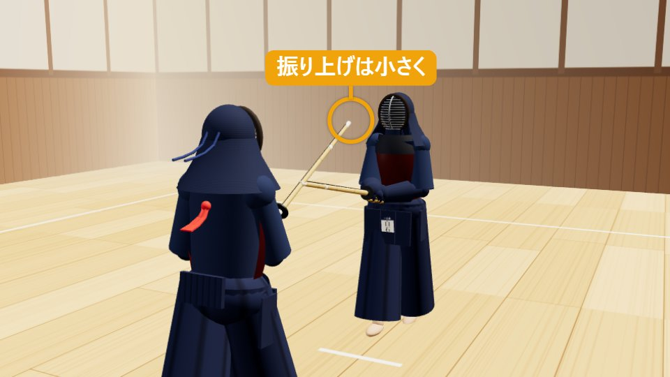
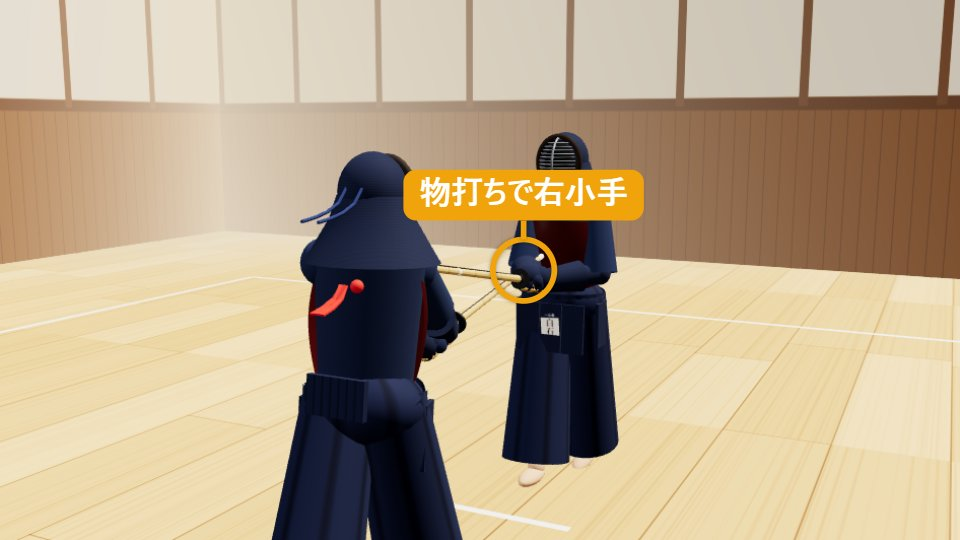
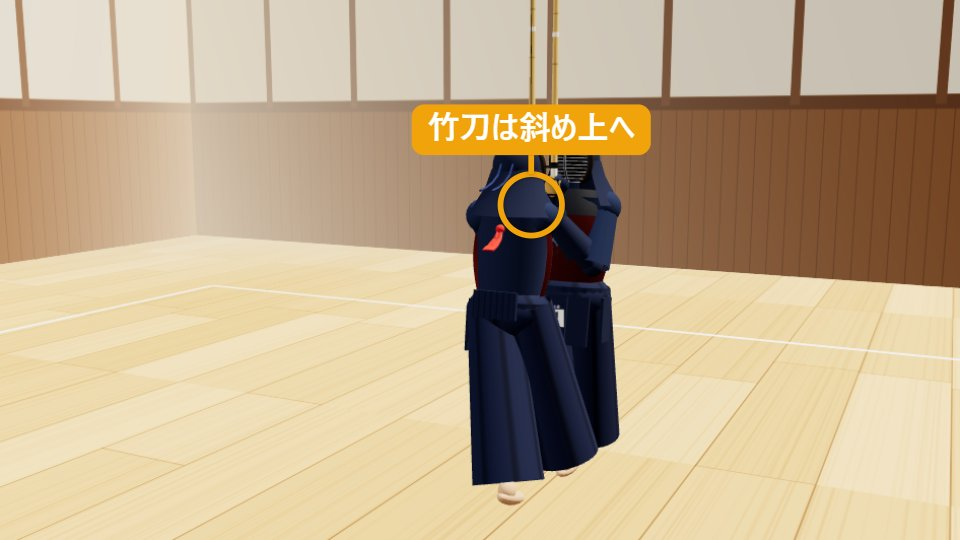
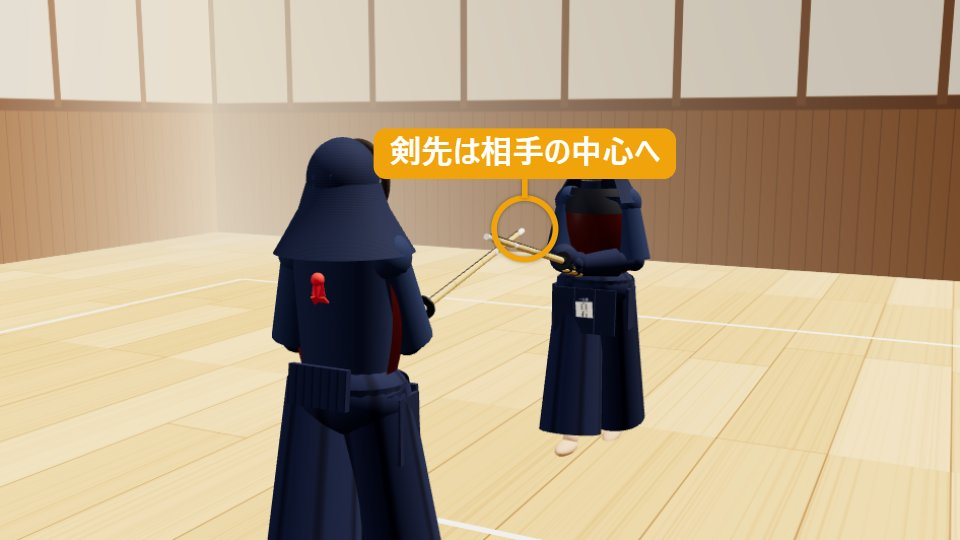

小手こて
小さく、鋭く、手首を打つ。
1小手の打ち方（動作）
ドラッグで回転・ホイールで拡大縮小
1構え・攻め合い
一足一刀の間合い。剣先で中心を攻め、相手の動きを見る。
有効打突チェック — 再生に合わせて点灯します
- 充実した気勢「コテ」の発声
- 竹刀の打突部物打ちで打つ
- 打突部位右小手
- 刃筋正しく真っすぐ上から打つ
- 適正な姿勢背筋が伸びて崩れない
- 残心下がって構え直す
分解して見る（5コマ）
-

STEP 1
構え・攻め合い
一足一刀の間合いで中段に構え、剣先で相手の中心を攻めます。小手を狙うときも、小手を見るのではなく、相手全体を見ます。
-

STEP 2
小さく振り上げ、踏み込む
剣先をわずかに上げる程度に小さく振り上げ（振り上げすぎない）、手は低いまま、背筋を伸ばしたまま右足から踏み込みます。
-

STEP 3
打突「コテ！」
相手の竹刀の上から真っすぐ、物打ちで右小手を打ちます。両腕が伸び、手は腹の高さ、竹刀は水平かやや上向き。打つ瞬間に両手を絞り、「コテ」と発声します（気剣体の一致）。
-

STEP 4
竹刀を斜め上へ引き上げ、体当たり
打ったらすぐに竹刀を斜め上（縦に近い角度）へ引き上げ、止まらずに体ごと相手へ当たります（体当たり）。駆け抜けず、胸と胸が当たる近さまで入ります。
-

STEP 5
間合いを取り直して残心
体当たりのあと、まっすぐ後ろへ下がって間合いを取り直し、竹刀を下ろして、剣先を相手の中心につけた中段に構えます。ここまでが「小手」です。
2小手とは（概要）
小手（こて）は、相手の右小手（手首から先を守る防具）を、小さく鋭く打つ技です。面よりも打突部位が小さく、速さと正確さが求められる、基本の一本打ちの技です。
小手は、面に比べて振りかぶりが小さく、相手の竹刀に近い位置を打つ技です。相手の手元に近い分、相手の剣先が外れた瞬間や、手元が浮いた瞬間をとらえる判断力が身につきます。
打つ部位が小さいので、「当てる」意識が強いと手打ちになりがちです。腰から出て、打突の瞬間に手の内を締める「冴え」のある打ちを身につけましょう。相手が面を打とうと手元を上げた瞬間に打つ「出小手」は、この基本の発展形です。
- 分類
- しかけ技・一本打ちの技
- 打突部位
- 右小手（相手が上段のときは左小手も）
- 機会
- 相手の手元が浮く・剣先が外れる瞬間
- 難易度
- ★☆☆（初級）
覚えておきたい言葉
3小手を打つときのコツ（技を出す側） 掛かり手
小手を見ない
小手を見ると頭が下がり、姿勢が崩れます。目線は相手の目、全体を見ながら、手元の動きは視野の端で感じ取ります。
振りかぶりは小さく、中心線から外さない
竹刀を左右に振ると刃筋がぶれ、相手に打つ気配も伝わります。体の正面で、剣先を少し上げて下ろす程度の小さな動きにします。
手だけで打たず、腰から出る
手だけで打つと、竹刀は当たっても冴えがありません。右足の踏み込みと打突を同時に行い、体ごと前へ出ます。
打つ瞬間に手の内を締める
当たる直前から当たる瞬間に両手を絞り、すぐ緩めます。力みっぱなしだと打ちが重く、遅くなります。
打ったら左足をすぐ引きつける
踏み込んだ右足に左足がすぐ寄ると、次の動きがすぐ出せます。左足が残ると姿勢が崩れます。
体当たりして、下がって構え直す
打ったらすぐ竹刀を斜め上へ引き上げ、駆け抜けずに体ごと相手へ当たります（体当たり）。そのあと、まっすぐ後ろへ下がって間合いを取り直し、剣先を相手の中心に戻すところまでが小手です。
よくある失敗
- 振りかぶりが大きく、相手の竹刀に当たる・面を打たれる
- 小手を見て、頭が下がる・腰が引ける
- 手だけで打ち、踏み込み足がついてこない
- 竹刀の根元や側面で当たる（物打ちで打てていない）
4受ける側（元立ち）が気にすること 元立ち
小手の稽古での受ける側（元立ち）は、相手が「正しい機会に、正しい小手」を身につけるための機会を作る役です。
小手を打てる状態を作る
中段から手元を少し上げる、または剣先をわずかに中心から外して、小手が打てる機会を作ります。初心者には、わかりやすく大きめに機会を見せます。
間合いを一定に保つ
一足一刀の間合いで構えます。相手の踏み込みに合わせて下がったり、詰めすぎたりしないようにします。
打たれる前に手元を逃がさない
打たれる前に手元を下げて逃げると稽古になりません。打たれたあとに手元を引く程度にとどめます。
打たれる位置の安全
小手の部分（手首）で受けます。肘や腕の内側など、防具の薄い部分に当たらないよう、構えと体の位置に気をつけます。
打たれたら体をさばく
打突を受けたら、相手が抜けられるよう、体を少しさばいて通り道を空けます。正面に立ちふさがると衝突の危険があります。
ひと言フィードバック
「今は届いていない」「今のは刃筋が通っている」など、受けた側だから分かる感覚を伝えます。
受ける側の学び：自分の手元が浮いた瞬間や、剣先が外れた瞬間に小手を打たれることが体で分かり、普段の構えと手元の管理の大切さが理解できます。
5小手が一本になる条件・ならない理由
有効打突は、充実した気勢、適正な姿勢をもって、竹刀の打突部で打突部位を刃筋正しく打突し、残心あるものとする。
剣道試合・審判規則 第12条（全日本剣道連盟）
竹刀が当たっただけでは一本になりません。小手の場合、6つの条件はそれぞれ次のように見られます。
| 条件 | ○ 一本になる小手 | × 一本にならない例 |
|---|---|---|
| 充実した気勢 | 「コテ」の発声が、踏み込みと打突に一致している | 声が小さい・打った後に遅れて出す |
| 適正な姿勢 | 上体が崩れず、腰から前に出ている | 頭が下がる・腰が引ける・手だけ伸ばす |
| 竹刀の打突部 | 物打ちで打っている | 竹刀の根元や中ほどで当たる |
| 打突部位 | 相手の右小手（手首付近）を打っている | 肘・腕の途中に当たる |
| 刃筋正しく | 打つ方向と刃の向きが一致している | 竹刀の側面（ひら）で当たる・かすめるだけ |
| 残心 | 打った後に体当たりし、下がって構え直している | 打った後に止まる・竹刀を下ろす |
審判の判定
- 審判は3人（主審1人・副審2人）。2人以上が旗を上げると一本になります。
- 小手は打つ部位が小さいため、「かすっただけ」の打突は一本になりにくいです。
- 相手の竹刀に当たって届かなかった小手や、竹刀が相手の竹刀に絡んだままの打突は、有効とは認められにくくなります。
小手を一本にするコツ
攻めて、手元が動いた瞬間に打つ
相手が中心を取って構えているところへ小手を打っても、竹刀で防がれます。剣先で攻めて、手元が上がった・剣先が外れた・居着いた瞬間に打つと、一本になりやすいです。
冴えのある打突
押しつけるのではなく、短く鋭い打突音が出る打ちが評価されます。打つ瞬間の手の内の締めが決め手です。
体当たりして、下がって構え直すまでが一本
打ったあとに体ごと相手へ当たり、下がって、剣先を相手の中心に戻す動作まで、審判は見ています。
観戦のポイント：この3つが見えたら「一本」
- 相手の手元が上がった・剣先が外れた「機会」に打っている
- 「コテ」の声・踏み込みの音・打った音がそろっている
- 打った人が体当たりのあとも、構えを崩さず相手に剣先を向けている